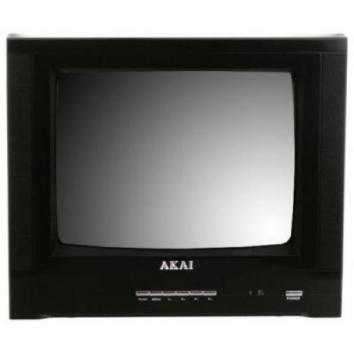
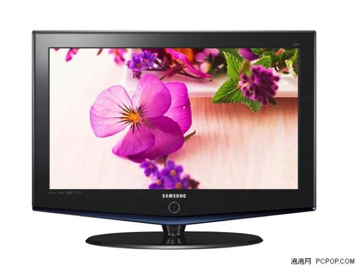
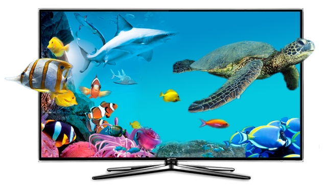
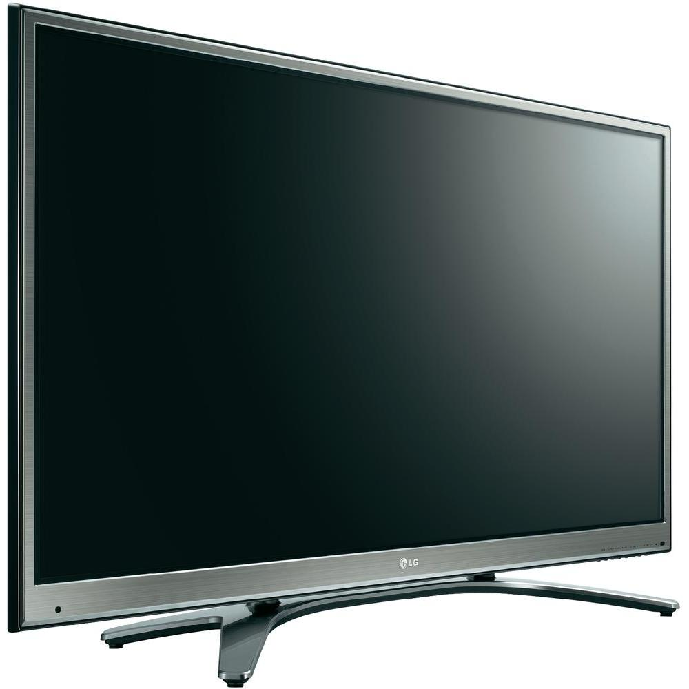

TV - OLED vs LED vs LCD vs Plasma - which one to buy???
TV - OLED vs LED vs LCD vs Plasma - which one to buy???
Compare TV types

Plasma TVs will save you a lot of money but draw more power than any of its competitors. Moreover, it is an outgoing display technology and manufacturers are likely to stop customer support in a few years. Nevertheless, Plasma TVs offer superior contrast and dark blacks, along with excellent viewing angles.
LCD TVs use CCLFs (Cold Cathode Fluorescent Lamps) and are the next in line in terms of power consumption; however, these score poorly when it comes to viewing angles. Though cheaper than LED televisions, they cost a bit more than generation-old Plasma TVs and can be quite expensive when it comes to large screen sizes.
LED TVs, the most popular today, are basically LCD televisions with LEDs (Light Emitting Diodes) instead of CCFLs. Currently the best in terms of power consumption, these offer better blacks than LCD televisions and are thinner as well. This type of TV also responds well to colour variations and acute viewing angles.
OLED is the display technology of the future, with the thinnest screen, amazing colour rendition, lower power consumption and better viewing angles than existing display types. However, TVs with OLED displays are extremely costly and suffer from poor lifespan.
Panel type – VA vs IPS

LED and LCD and televisions available today come with either IPS or VA panels. Since both types of TVs have LCD displays (LED televisions are LCD televisions with LED bulbs instead of CCFLs), both have liquid crystals. The different between IPS and VA panels lies between the alignment of the liquid crystals -- horizontal in IPS and vertical in VA panel.
The advantage that IPS has over VA is that there is no distortion or damage to the screen even if it is hit quite hard. Apart from that, it also offers great viewing angles and maintains consistency of colours. Therefore, if you are worried about your kids damaging the brand new television, then go for IPS panels, otherwise VA panels will be suitable. LG and Philips use IPS panels, while others like Sony and Samsung have VA displays.
Pixelation is the same with both the panels and you should be seated at least eight to 10 feet away from the TV for best picture quality.
Brightness
Brighter display does not always make a better TV. If you go for a TV that offers high brightness, the dark colours - like grey and black - will appear dull. Brightness level in LED TVs is the best since the blacks appear dark as well, while Plasma and LCD televisions follow it from afar. In order to avoid pixelation in TVs with screens up to 40-inch wide, distance between the television and viewers should be 10-feet. This distance goes up for screen TVs having even bigger screens.
Power consumption
LED TVs are the best choice if you are concerned about the amount of power consumed by your new television. This is because of the LED bulbs used in the display, which consume 20-30% less power than CCFL's of LCD TVs. Last in the race come Plasma televisions, which will add a hefty amount to your power bill as compared to LCD as well as LED TVs.
Refresh rate
Refresh rate in a television refers to the speed at which the display changes images. Ever encountered the problem of motion blur on the TV? This is because of poor refresh rate. Higher refresh rate in a television translates to a clearer picture quality and reduce this motion blur or ghosting. Moreover, when it comes to gaming, the refresh rates matter a lot.
If you want to connect your Xbox, Play Station or Wii to your TV, then Plasma televisions are the best option, since the refresh rate can reach up to 600Hz. On the other hand, LCD TVs deliver the worst results when the subject is of refresh rates and motion blur is a common complaint. A LED television can be a decent choice since it can handle high refresh rates in videos and games and render a quality image.
Internet, voice control and apps
Internet connectivity in a TV is among the new advancements introduced in TVs, making them the much touted SmartTVs. But do you really plan to use internet on a big screen television? If you want to watch YouTube videos, chat with friends, check mails, play games and access Facebook on a TV, then you only have a handful options in the market. You can also look forward to features like gesture control, voice control and access to apps with these televisions.
Just so you know, accessing all forms of online content on the television would require you to attach a keyboard and mouse to it via USB port. And be ready to pay a steep price for a set of features that you could probably access on your phone as well.
If you decide against buying an internet-enabled TV, you can just link an Android set-top-box like Evo TV to your new non-internet television and enjoy all Android apps and seamless access World Wide Web on your TV. And before you go for an internet-enabled TV, take into account the bandwidth you would consume with this new device at your disposal. You should consider the data transfer limit that your plan has and the speed of your net connection before opting for an internet TV.
3D viewing
3D viewing in a television is yet another feature that has caught the imagination of the masses. But the content producers, ie the companies which make 3D movies, videos etc, are still playing catch-up. There is a huge dearth of 3D content in the market and no TV can convert a 2D video into 3D. So, before going for a 3D television, be prepared to be disappointed since you will not be using that feature too much.

If you wear spectacles and are thinking of investing in a 3D television, keep in mind that you would have to use contact lenses in order to view the 3D images comfortably. You only alternative in India would be the 55-inch Toshiba 3D that renders three-dimensional images and videos without any glasses. However, this technological marvel costs a hefty Rs 12 lakh and may not be within everyone's budget.
Companies that claim to have TVs that can convert 2D videos to 3D are simply reproducing the same image twice in order to add depth to it. This process is quite effective but the on-screen rendition is not of the same quality as true 3D videos. However, this technology allows you to watch real-time videos in 3D as well, so you can convert any type of movie into a 3D extravaganza, well almost.
Burn-in
Burn-in is the condition in which an image remains on the TV screen even when the video has moved forward. This issue is attributed to phosphor, which is used in CRT and Plasma televisions. On the other hand, it does not affect LED TVs since they do not have phosphor at all, making them the best choice when it comes to this parameter.
Though LCD TVs do not use phosphor either, an image can stick to the screen permanently if the liquid crystals render the same image for too long. Nevertheless, for home usage, this problem is hardly an issue and makes LCD televisions almost immune to the issue.

Ports and accessories
With a swanky new TV come a host of ports, such as USB, Ethernet and HDMI, along with ports for AV and RF cables. These enable you to access content from smartphones, tablets and computers, connect to the internet and link the television to speakers. Remember more ports mean more functionality, since you may be at a loss if your TV has only one port and you want to attach a keyboard as well as a hard disk drive.
There are a few of accessories you would be required to buy with a new TV. If you want to view the content on your smartphone or tablet on the big screen of television, then be prepared to purchase a HDMI-to-miniHDMI cable. On the other hand, a HDMI-to-HDMI cable would be the need of the hour if you wish to view content of your laptop on the TV. But most of all, remember to purchase a voltage stabiliser as sudden change in voltage can damage the device, putting the burden of repair costs on your shoulders.
For 3D TVs, manufacturers usually provide a pair of 3D glasses for free. But for a family with kids or a joint family for that matter, you will need several more if the whole family wants to enjoy the experience together. These 3D glasses cost around Rs 2,000 in the Indian market, so depending upon the number of people in your family and the frequent guests, this amount can add up to a considerable amount.
Festive season offers, warranty and EMI
When the festive season beckons, manufacturers and retailers roll out offers to lure buyers, from slashed price to pack of DVDs to home theatre systems. Of course, you can always bargain the price of the TV you choose with the seller. Selling your existing TV to a dealer for a good sum, rather than the retailer (who usually refund around Rs 2,000 to 4,000 only) will be an added benefit.
Another point to remember is that your new TV burns a hole in your pocket and its best that you opt for extended manufacturer warranty while making the purchase. This will make you immune to the associated costs in case any problems crop up with the device over time as the manufacturer will take care of the issue on its own.
Since a decent big screen TV now costs over Rs 30,000 in India, you may want to consider EMI option to soften the financial blow on you. Nowadays, retailers will take just the details of your ID card and credit card to process the transaction at 0% interest.
{kind=link}
{kind=link}
{kind=link}
{kind=link}